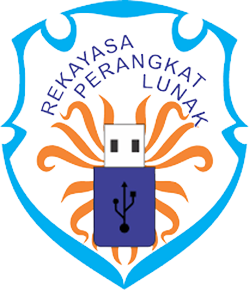

Kompetensi Keahlian Rekayasa Perangkat Lunak (RPL) SMK Real Informatika Batam didirikan sejak tahun 2010. Rekayasa Perangkat Lunak merupakan salah satu kompetensi keahlian dalam bidang Teknologi Komputer dan Informatika yang secara khusus mempelajari tentang pemrograman komputer. Saat ini RPL memiliki 10 kelas dari mulai kelas X, kelas XI dan Kelas XII.
Jurusan RPL
Kompetensi keahlian Rekayasa Perangkat Lunak (Software Enginering) merupakan salah satu kompetensi keahlian di SMK Real Informatika Batam dalam bidang Teknologi Komputer dan Informatika yang secara khusus mempelajari tentang analisis serta pemrograman komputer. Lulusan RPL dewasa ini sangat dibutuhkan untuk menjawab banyaknya kebutuhan industri bagi ketersediaan tenaga teknisi dalam bidang Rekayasa Perangkat Lunak, mengingat teknologi informasi berbasis komputer sudah mulai merambah ke berbagai sektor.Kompetensi keahlian Rekayasa Perangkat Lunak (Software Enginering) merupakan salah satu kompetensi keahlian di SMK Real Informatika Batam dalam bidang Teknologi Komputer dan Informatika yang secara khusus mempelajari tentang analisis serta pemrograman komputer. Lulusan RPL dewasa ini sangat dibutuhkan untuk menjawab banyaknya kebutuhan industri bagi ketersediaan tenaga teknisi dalam bidang Rekayasa Perangkat Lunak, mengingat teknologi informasi berbasis komputer sudah mulai merambah ke berbagai sektor.Kompetensi Keahlian Rekayasa Perangkat Lunak (RPL) SMK Real Informatika Batam didirikan sejak tahun 2010. Rekayasa Perangkat Lunak merupakan salah satu kompetensi keahlian dalam bidang Teknologi Komputer dan Informatika yang secara khusus mempelajari tentang pemrograman komputer. Saat ini RPL memiliki 10 kelas dari mulai kelas X, kelas XI dan Kelas XII.
Secara khusus tujuan Program Keahlian Rekayasa Perangkat Lunak (RPL) SMK Real Informatika Batam adalah membekali peserta didik dengan keterampilan, pengetahuan dan sikap agar kompeten untuk:
- Menginstalasi Perangkat Komputer Personal dan Menginstal Sistem Operasi dan Aplikasi Komputer.
- Mengerti tentang Konsep Algoritma Pemrograman dan Konsep Perangkat Lunak
- Merancang Sistem Informasi (Business Process) untuk membangun suatu Software atau Aplikasi.
- Membangun Software Aplikasi Databases Berbasis Desktop, Web dan Mobile (Android).
Prospek Kerja
- Web Application Programmer
- Database Programmer
- Interfacing Programmer
- Mobile Application Programmer (Android)
- Desktop Application Programmer
- Phyton Programmer
- IT Support and IT Staff
- Hardware and Software Technicians
- Game Programmer